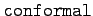
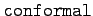
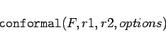

Inhalt Index DeskTop Bronstein

 Computeralgebrasysteme Graphik in Computeralgebrasystemen Graphik mit Maple Zweidimensionale Graphik
Computeralgebrasysteme Graphik in Computeralgebrasystemen Graphik mit Maple Zweidimensionale Graphik


In der Maple-Bibliothek findet man das Spezialpaket  mit zusätzlichen graphischen Operationen. Im zweidimensionalen Fall sind hier besonders die beiden Anweisungen  und von Interesse. Mit
mit zusätzlichen graphischen Operationen. Im zweidimensionalen Fall sind hier besonders die beiden Anweisungen  und von Interesse. Mit
| (20.97) |
können Kurven in Polarkoordinatenform gezeichnet werden. Mit L kann eine Menge (in geschweifte Klammern eingeschlossen) mehrerer Funktionen bezeichnet sein. Maple interpretiert die eingehende Variable  als Winkel und zeichnet die Kurven im Bereich zwischen , wenn nicht ein davon abweichender Bereich explizit eingegeben wird.
als Winkel und zeichnet die Kurven im Bereich zwischen , wenn nicht ein davon abweichender Bereich explizit eingegeben wird.
Der Befehl
|  | (20.98) |
bildet mit Hilfe der komplexen Funktion F die Gitterlinien eines rechteckigen Gitters in ein Kurvengitter ab. Die neuen Gitterlinien schneiden sich ebenfalls rechtwinklig. Mit dem Bereich r1 werden die ursprünglichen Gitterlinien festgelegt. Er ist voreingestellt auf 0..1+(-1)1/2. Der Bereich r2 legt die Größe des Fensters fest, in welchem die Abbildung liegt. Hier werden als Voreinstellung die sich aus der Abbildung ergebenden Maxima und Minima benutzt.